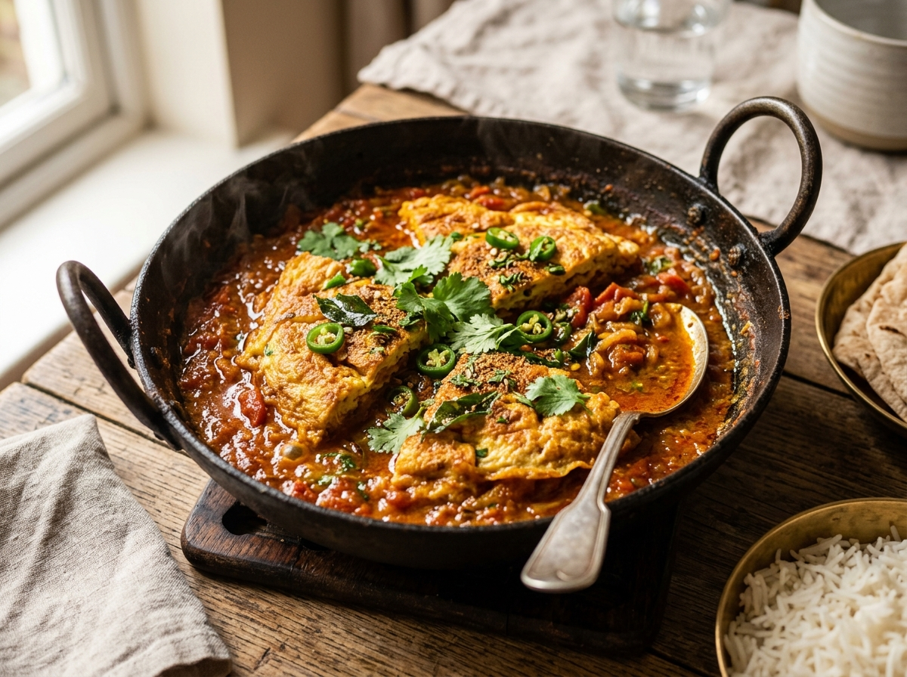

Curries
5-Minute Omelette Curry
A speedy, flavorful egg curry made by pouring a seasoned egg mix directly onto a fragrant spiced onion-garlic masala base. Recipe by @joee_cooks.
Prep Time
2 mins
Cook Time
3 mins
Total Time
5 mins
Servings
1–2
Calories
400 kcal
Instructions
- Beat the eggs: In a bowl, whisk together the 3 whole eggs, ¼ finely chopped onion, green chilli, ¼ tsp turmeric, 1 tsp pepper, and ½ tsp salt. Set aside.
- Make the masala: Heat 1 tbsp oil in a pan on medium flame. Add cumin seeds, curry leaves, chopped garlic, and ¾ chopped onion. Sauté until golden.
- Add spices: Add Kashmiri red chilli powder, turmeric powder, coriander powder, garam masala, and ½ tsp salt. Mix thoroughly.
- Add eggs: Pour the whisked egg mixture directly over the sautéed masala in the pan and spread evenly.
- Cook: Lower the heat and cook for 1 minute until the bottom of the omelette sets nicely.
- Flip & Serve: Carefully flip the omelette, turn off the heat, and let the residual heat cook the top. Serve hot! 🍳